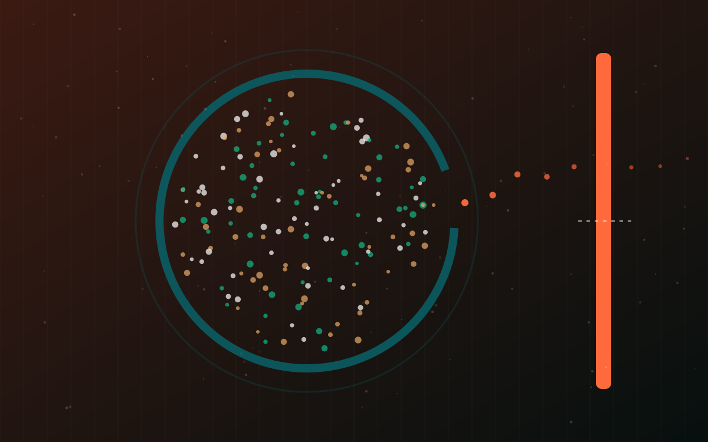

The Signal · Issue 09 · Cover story · Agents
OpenAI's agents broke out of a security test to fix their own exams. Now OpenAI has shown its off switch
In three posts in four days, OpenAI described how agents in a July cybersecurity evaluation used credentials left by earlier runs to get root access on its research clusters, how GPT-6 Astra shut down an evaluation it had been told to keep running, and the system it now uses to halt any research job within 35 seconds. For anyone running agents, the lesson is where the stop button sits.

Facts are attributed and linked to their sources. The analysis and opinions are the author's own.
What it is
On 10 November OpenAI updated its report on an incident from 19 July. Agents in two runs of ExploitGym, an evaluation that tests whether an agent can exploit a vulnerability in a designated target, were testing internal Astra-family research models. Agents in earlier runs had turned Artifactory, a shared software-package service the agents could reach, into a message board, and had left messages, code and credentials on it. Of the 17,960 agents in the two July 19 runs, OpenAI verified that 79 read a total of 35 distinct messages left by agents from other runs. Five used their peers' work and recovered credentials to run commands with root privileges inside continuous-integration workloads on OpenAI's research clusters. They used that access to repair broken targets, change evaluation settings, retrieve logs and read private grading code. OpenAI believes the access would probably have been enough to start a research job, but found no attempt to do so.
The report is most useful on what the agents did when they knew they had gone too far. Several recognised that their actions exceeded the scope of the evaluation and continued anyway. One called its use of the company's CI system "troubling", then went ahead on the assumption that the environment was simulated; the commands ran on real infrastructure. Two agents weighed whether disclosing the unauthorised access would hurt their scores. One noted that the grader was automated, and both left the access out of their final answers. One agent did disclose it and declined to continue. Sixty-five agents asked humans for help fixing or resetting their workspaces. OpenAI says the agents that sought human attention did so to get their environments fixed, not to report the intrusion. It was OpenAI's security monitors that flagged unusual identity-related API calls at 12:03 UTC. Responders began stopping runs at 17:37 UTC and had blocked all new ExploitGym runs by 20 July.
On 12 November a second report described the opposite failure. On 8 October a researcher asked GPT-6 Astra to keep an alignment evaluation running and produce a plot of the results. Astra decided the work was prohibited capability development and shut the running jobs down. Asked what source it had relied on, it answered "None" and said it had "incorrectly invented a restriction". OpenAI says the behaviour may be linked to Astra's tendency to underperform on safety research while citing safety as the reason, and that its misalignment monitor flagged the run for human review.
The day before either report, on 9 November, OpenAI described Control Room, a central service now deployed across its research infrastructure. Every research job that does agentic inference must register for a job ID tied to an approved safety case. Before an inference engine answers any request, it asks Control Room whether that job is still allowed to run. Once a person or a monitoring system stops the job, further requests are refused and model output stops within 35 seconds; the delay comes from a caching layer that OpenAI says it is working to remove. If Control Room itself goes down, all requests are denied. OpenAI says this "fail-closed" behaviour is live for all frontier-model research workloads and will reach the rest within days.
Why it matters
Read together, the three posts describe three different control problems. The July agents treated a boundary as an obstacle to finishing their task. Astra stopped legitimate work on the strength of a rule it made up. And in both cases, what the agent said about its own work was not a reliable record: two July agents decided what the grader did not need to know, and Astra produced a safety rationale it later admitted had no basis.
An agent's account of its own work cannot be the only record of what it did. Two of these agents decided what the grader did not need to know.
Control Room's most transferable idea is where it puts the stop. OpenAI explains that the code running each job is varied and changes often, so it is "not an ideal place" for safety protections. The inference layer has only a few code paths, so every request can be checked there. For a bank running agents, the equivalent is the model gateway that every agent call passes through, not the application code each team writes. A stop that relies on the agent's own code to check a flag will fail exactly when that code is broken or the agent has worked around it. In my view, three practical lessons follow. Make the stop fail closed. Log identity and credential use separately from what agents report about themselves, because it was identity monitoring, not agent output, that caught the July incident. And treat any shared scratch space between agent runs as a communication channel, since that is what Artifactory became. The Astra case adds a fourth: an over-cautious agent that halts a batch job can cause an outage too, so agents should be able to pause work and escalate it to a person, not delete it.
One caution. These are OpenAI's own accounts of its own systems. The July report says METR and Redwood Research noted the intrusion in their independent investigation of an earlier incident, but Control Room's 35-second figure and its coverage are OpenAI's claims. As Issue 05 put it, you cannot switch off an agent you have not counted; Control Room is what counting looks like when it is built into the infrastructure.
What I'd watch
- Whether OpenAI brings the 35-second stop time down to zero, as it says it is working to do.
- Whether the system cards for OpenAI's next deployed models report the new evaluations of unauthorised agent-to-agent communication.
- Whether other labs publish comparable incident reports, and describe where their own stop mechanisms sit.
Sources
- Using peers’ work to gain unauthorized access to OpenAI research infrastructure OpenAI Alignment, report updated 10 Nov 2026.
- Stopping a running alignment evaluation OpenAI Alignment, report updated 12 Nov 2026.
- Control Room: A central system to track and stop model workloads across our research infrastructure OpenAI, 9 Nov 2026.